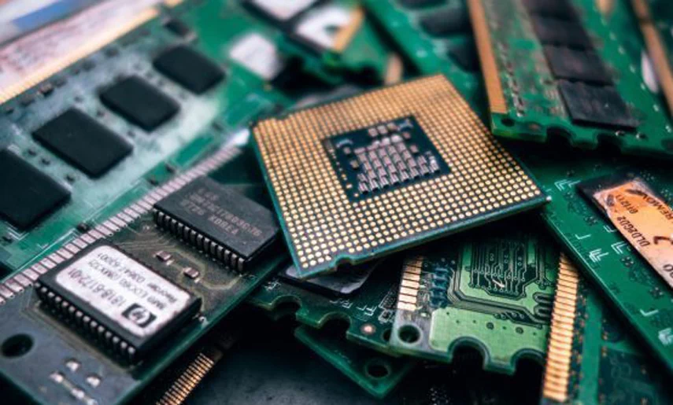
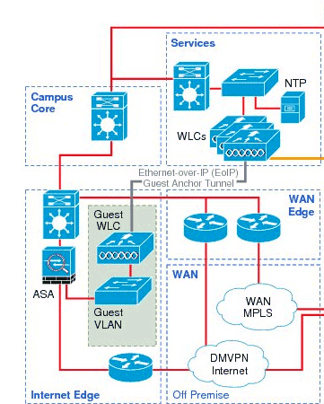

Electronic components and logic functions in circuits
Datasheets and schematics

Desktop Operating Systems
Practical introduction to operating systems and virtualization
System management in Windows 10 (user management, file management, disk management, etc.) via GUI and CLI (PowerShell and CMD)
System management in Linux (user management, file management, disk management, etc.) via CLI (bash-shell)

Databases
Introduction to the following concepts: database, database system, relational database system, SQL. We will also handle SQL CRUD operations (read, insert, update, and delete data).
Conceptual topics will include creating a relational data model using normalization and implementing this in SQL.
Problem Solving
The following mathematical topics will be covered:
Review of algebra and precalculus
Propositional logic and logical circuits
Logarithms, functions, and graphs
Introduction to cryptography (modular arithmetic)
Affine cipher, hash functions, and RSA
Techniques from linear algebra
Introduction to codes and linear codes
Programming Fundamentals
Control structures: sequencing, selection, and iteration